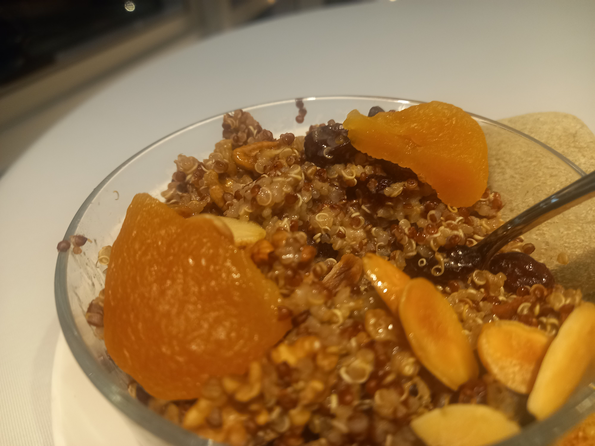

B1 — cand-bowl-tofu-thai

Salteado thai con tofu y vegetales. Colorido, foto real. Wikimedia CC (Paul Martin).
B2 — cand-bowl-quinoa

Ensalada de quinua con frutos secos y vegetales. Bowl real fotografiado. Wikimedia CC.